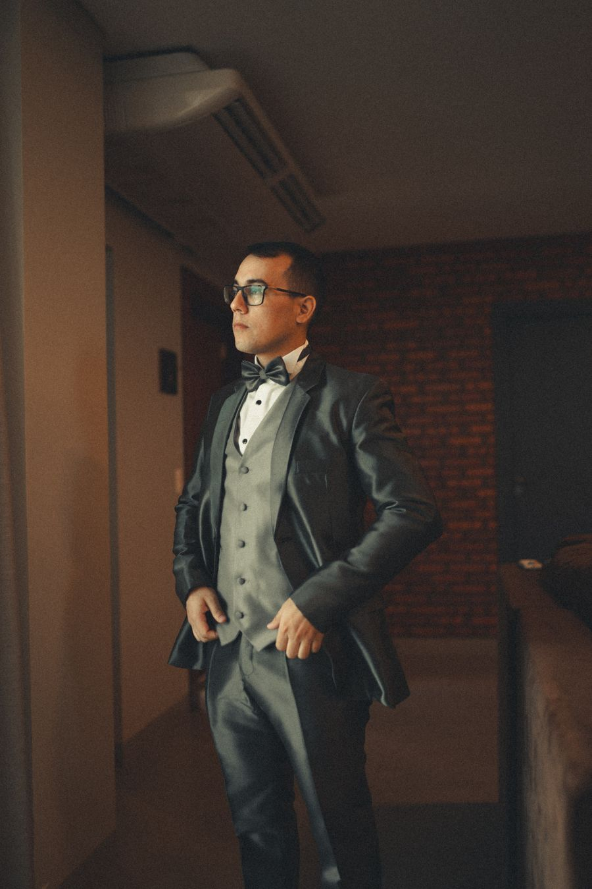
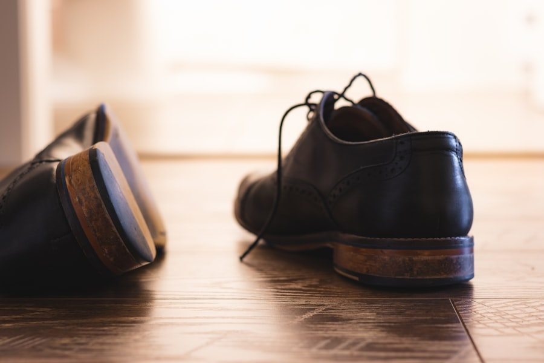
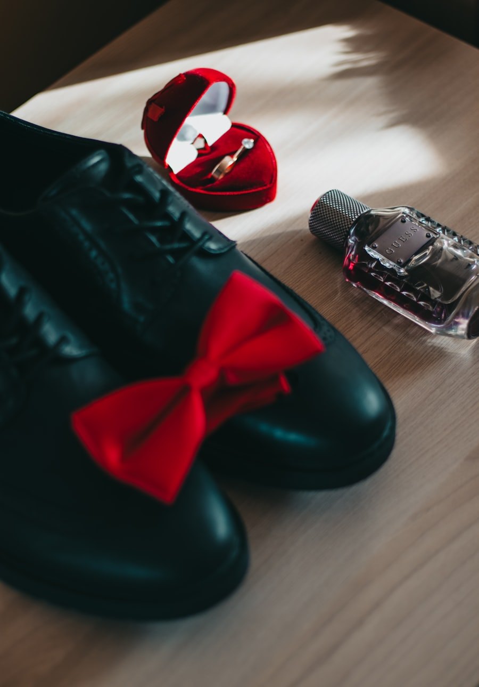

1. Kit oficial
Somente figurino Spin, completo, do estúdio em que você está escalado. Nada pessoal no lugar das peças.
Antes do turno · durante a operação · ao finalizar.

Fluxo Figurinos: retirada registrada → vestir e conferir → operação → devolução com condição informada.
Peça reprovada se qualquer item do checklist falhar.
Atenção: irregularidade? Substituir ou encaminhar para manutenção — não autorizar uso em câmera.
Quando integrantes do kit do estúdio — confirme no guia do seu estúdio.


Game Presenter e Shuffler — modelo indicado por estúdio.



Importante: o guia do seu estúdio prevalece sobre detalhes de modelo e cor.